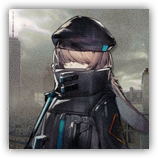

预备干员 - 术师 Reserve Operator - Caster
远程 法术；普通 类人（任意；助战者）
|
 |
罗德岛预备干员。来自罗德岛的预备干员，尚且缺乏经验，但在经过一定的战术训练和磨合后可以执行更加复杂困难的任务。 术师。该类型干员属于法术伤害特化型单位，通过源石技艺实施范围或单体攻击。对重甲单位有显著穿透效果，但攻击间隔较长且生存能力较薄弱。适合部署在安全位置进行火力支援。 |
“欸，我是看了什么？我不是术师干员吗？这是什么？”
预备干员 - 术师丨Reserve Operator - Caster
中型类人（任意；助战者），中立
| AC 13（轻甲） | 先攻 +0（10） |
| HP 6×等级（等级×d6的生命骰） | |
| 速度 30 尺 | |
| 调整 | 豁免 | 调整 | 豁免 | 调整 | 豁免 | |||||||||
|---|---|---|---|---|---|---|---|---|---|---|---|---|---|---|
| 力量 | 10 | +0 | +0 | 敏捷 | 10 | +0 | +0 | 体质 | 10 | +0 | +0 | |||
| 智力 | 12 | +1 | +1 | 感知 | 12 | +1 | +1 | 魅力 | 16 | +3 | +3 |
| 技能 奥秘+1+PB，历史+1+PB，医药+1+PB，洞悉+3+PB |
| 感官 黑暗视觉30尺，被动察觉11+PB |
| 语言 通用语，以及一门任意语言 |
| PB 等于其指引者的加值 |
特质 Traits
助战抗性 Retainer Resistance。助战者进行任何豁免检定时，均可以加上指引者的熟练加值。
5级：魔法抗性 Magic Resistence。术师干员为抵抗法术和其它魔法效应而作的豁免检定具有优势。
动作 Actions
招牌攻击：纯能弹 Energy Bullet。远程或近战攻击检定：+3+PB，触及5尺或射程120尺。命中：1d4+PB力场伤害。此攻击在5级（2d4），11级（3d4）以及17级（4d4）时额外造成1d4力场伤害。
3级：强力戏法 Tactical Shoot（3次/日）。术师发动一次具有优势的招牌攻击，这次攻击即便失手也会造成一半的伤害。
5级：压制术法 Suppression Art（3次/日）。感知豁免检定：DC10+PB，术师选择60尺内的一个可见生物。失败：目标倒地并陷入失能，直到其回合结束。
7级：烈焰爆轰 Blaze Blast（1次/日）敏捷豁免检定：DC10+PB，源自术师120尺内可见一点的20尺球状区域内的每个敌人。失败：PB×D12点火焰伤害，若体型不超过大型则倒地。成功：仅受半伤。成功或失败：火焰会引燃区域内未被持握的易燃物。